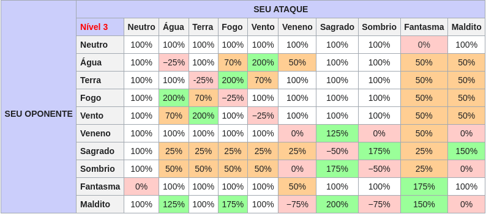

Guia do Iniciante
- 1 Interface e Comandos
- 1.1 Interface
- 1.2 Comandos
- 2 Mecânicas
- 2.1 Atributos Primários (Atalho ALT+A)
- 2.2 Status Secundários
- 2.3 Sistema de Cartas
- 3 Elementos
- 3.1 Tabela Geral
- 4 Classes
- 5 Economia
Se você é novo no mundo de Ragnarok, não se preocupe! Esse Guia irá te auxiliar a se familiarizar com os recursos e mecânicas oferecidas pelo jogo e você estará apto a explorar rune-midgard por sí só rapidamente. O Ragnarok é dotado de um universo em constante espansão sendo explorado por uma grande comunidade ativa de jogadores dentro do RagnaCooL. Os primeiros passos são:
- Entrar no Canal do Discord do RagnaCooL.
- Fazer o Download do jogo.
- Ler e estar de acordo com as Regras.
Interface e Comandos
Interface
A interface do Ragnarok é bastante intuítiva e tem sua estrutura baseada em "janelas", existem diversos atalhos (geralmente ALT+LETRAS) que fazem com que pequenas janelas se abram, os atalhos básicos são:
| ATALHOS BÁSICOS | |||||||||||||
|---|---|---|---|---|---|---|---|---|---|---|---|---|---|
| Insert | Senta/Levanta para acelerar o processo de recuperação de HP. | ||||||||||||
| F1-F9 | Barra de atalhos rápidos (hotkeys) Basta abrir o menu de habilidades (alt+S) e escolher quais das habilidades você quer acionar pelo atalho, clicar e arrastá-la para uma das janelas vagas. | ||||||||||||
| F10 | Aumenta ou diminui o tamanho da janela de chat. | ||||||||||||
| F11 | Fecha todas as janelas. | ||||||||||||
| F12 | Senta/Levanta Abre/fecha o menu de atalhos. Você tem ao todo 3 menus de atalhos diferentes. Para alterná-los, basta apertar a tecla F12 repetidas vezes. | ||||||||||||
| Alt + A | Mostra/esconde o Menu de Status. | ||||||||||||
| Alt + C | Mostra/esconde o Menu do Chat. Quando você estiver com uma sala de Chat aberta, não poderá movimentar seu personagem. | ||||||||||||
| Alt + E | Mostra/esconde o Menu de Itens. | ||||||||||||
| Alt + Z | Mostra/esconde o Menu de Grupos... | ||||||||||||
| Alt + Q | Mostra/esconde o Menu de Equipamentos. | ||||||||||||
| Alt + S | Mostra/esconde o Menu de Habilidades. | ||||||||||||
| Alt + V | Aumenta ou diminui o tamanho do Menu de Informações Básicas. | ||||||||||||
| Alt + H | Mostra/esconde o Menu de Lista de Contatos. | ||||||||||||
| Alt + L | Mostra/esconde o Menu de Emoções/Emoticons. | ||||||||||||
| Alt + 1-10 | Acessa o que você programou no Menu da Lista de Atalhos (Alt+M). | ||||||||||||
Comandos
Existem diversos comandos no Portal Kafra, comandos são geralmente identificados pelo sufixo @ eles geralmente são feitos para servirem de atalhos para ações cotidianas dentro do jogo, como teleportar para uma cidade (@go), abrir rápidamente o seu armazém (@storage) ou até mesmo checar informações sobre um monstro específico (@mi) e onde encontra-lo (@whereis).
| COMANDOS BÁSICOS | |||||||||||||
|---|---|---|---|---|---|---|---|---|---|---|---|---|---|
| /h | Lista todos os comandos do jogo. | ||||||||||||
| /nc | Ataca continuamente sem necessidade de pressionar a tecla Ctrl. | ||||||||||||
| /ns | Usa habilidades em monstros sem a tecla shift. | ||||||||||||
| /where | Mostra sua localização atual com as coordenadas do mapa. | ||||||||||||
| /alchemist | Mostra 10 melhores Alquimistas do servidor. | ||||||||||||
| /blacksmith | Mostra 10 melhores Ferreiros do servidor. | ||||||||||||
| /taekwon | Mostra os 10 melhores Taekwons do servidor. | ||||||||||||
| /aura | Remove o brilho do chão da aura do nível máximo. | ||||||||||||
| /aura2 | Remove por complete os efeitos da aura. | ||||||||||||
| /effect | Liga ou desliga alguns efeitos gráficos. | ||||||||||||
| /lightmap | Remove a maioria dos efeitos de sombra e luz do jogo. | ||||||||||||
| /fog | Liga ou desliga o efeito de névoa. | ||||||||||||
| /organize Nome do Grupo | Mostra/esconde o Menu de Lista de Contatos. | ||||||||||||
| /leave | Sai do grupo atual. Se você é o líder, o grupo será desfeito. | ||||||||||||
| /memo | Memoriza este local como ponto de Portal (requer a habilidade Portal). | ||||||||||||
Mecânicas
Atributos Primários (Atalho ALT+A)
Atributos são as seis características fundamentais de um personagem que o definem. É muito importante que os pontos distribuidos sejam definidos com cautela pois uma vez selecionados só podem ser redefinidos (ou resetados) por um custo.
Os atributos começam no valor base 1 e podem ser evoluídos até 99. Os atributos podem ser evoluídos ao investir pontos de atributos, que são ganhos quando um personagem evoluí de nível de base. Quanto maior o número de pontos investido em um atributo, maior o seu custo para continuar evoluindo.
- STR: Para armas de curto alcance, cada ponto investido em STR aumenta o StatusATK em +1. Para armas de longo alcance, cada 5 pontos investidos em STR aumenta o StatusATK em +1. Cada ponto em STR também adiciona +30 de limite de peso que pode ser carregado.
- AGI: Cada ponto investido em AGI adiciona +1 de Flee (Esquiva) e aumenta a ASPD (velocidade de ataque). Além disso, cada 5 pontos investidos em AGI adiciona 1 de SoftDEF (Defesa leve).
- VIT: Cada ponto investido em VIT adiciona +1% MaxHP (Vida máxima), +2% de eficácia de Itens de recuperação de HP, e +1% de resistencia para vários Status Negativos. cada 2 pontos em VIT adiciona +1 SoftDEF (Defesa leve). Cada 5 pontos em VIT adiciona +1 SoftMDEF(Defesa leve) e +1% Velocidade de regeneração natural de HP.
- INT: Cada ponto investido em INT adiciona +1.5 StatusMATK (Ataque Mágico), +1% de SP máximo, 1% de eficácia de Itens de recuperação de SP. Cada 2 pontos de INT adiciona +1 SoftMDEF(Defesa leve) e cada 6 pontos em INT adiciona +1 de regeneração natural de SP.
- DEX: Para armas de longo alcance, cada ponto em DEX aumenta StatusATK (Ataque) em +1. Para armas de curto alcance, cada 5 pontos em DEX aumenta o StatusATK (Ataque) em +1. cada ponto em DEX também adiciona +1 HIT, aumenta a velocidade de conjuração e aumenta a ASPD (Velocidade de Ataque). cada 5 pontos em DEX adiciona +1 de StatusMATK (Ataque mágico) and +1 SoftMDEF (Defesa leve).
- LUK: Cada ponto investido em LUK adiciona +0.3% Chance de ataque crítico, aumenta a resistência a vários Status Negativos. Cada 3 pontos em LUK adiciona +1 StatusATK (Ataque), +1 StatusMATK (Ataque Mágico), and +1 HIT. Cada 5 pontos em LUK adiciona +1 Flee (Esquiva) e a cada 10 pontos em LUK adiciona +1 de Esquiva Perfeita.
Status Secundários
Também há os Status Secundários, que são determinados pelos Atributos Primários, junto com equipamentos e habilidades.
- ATK (Ataque Físico)
ATK é o produto de STR e DEX, e é dividido em dois, StatusATK(caixa vermelha) and WeaponATK(caixa azul). Por essência, ambos contribuem na fórmula para o dano final. No entanto, quando aplificadas por cartas de %, apenas o WeaponATK é aplificado. Isso funciona assim pois dessa forma os jogadores não devem se prender a itens básicos de 4 slots (Como por exemplo um Arco composto com 4 cartas raciais)e ao invés disso irão atrás de conseguir armas melhores e mais raras para alcançar danos mais altos.
NOTA: A porcentagem (%) de modificadores de dano são "valores escondidos". Isso significa, que não podem ser visualizados na janela de atributos/status
- MATK (Ataque Mágico)
Ao lado de ATK, o Ataque Mágico(MATK) também é dividido em dois, StatusMATK(caixa vermelha) and WeaponMATK(caixa azul). No caso do MATK, WeaponMATK é o principal fator que aumenta a porcentagem de dano final aplicado.
- DEF & MDEF (Defesa Física e Defesa Mágica)
DEF e MDEF são status que diminuem o dano recebido. Existem dois tipos de defesa:
SoftDEF (caixa vermelha): É um produto de INT e VIT e reduz o dano em um valor base (que não é em porcentagem).
HardDEF: É o total da defesa advinda dos equipamentos, incluíndo refinamentos(caixa azul) e reduz o dano recebido em um valor em % dentro da fórmula final.
Exemplo
- 200 HardDEF = 25% Redução de dano
- 400 HardDEF = 40% Redução de dano
- 20 HardMDEF = 25% Redução de dano
- 40 HardMDEF = 25% Redução de dano
O Efeito da HardDEF/MDEF é reduzido exponencialmente, ou seja, quanto maior o número, menos efetivo se torna.
- HIT (Taxa de acerto)

HIT é a taxa de acerto com a qual você acerta os seus ataques físicos. É afetada pela DEX e LUK, porém, a LUK é o fator mais significante entre os dois. HIT pode ser calculado com (175 + BaseLv + DEX + Floor(LUK ÷ 3) + Bonus). Baseado no exemplo acima: (175 + 82 + 53 + Floor(5 / 3 = 1.3) + 0) = 311 Hit
- FLEE (Esquiva)
Flee é o status que é responsável pela esquiva do personagem. Existem dois tipos de esquiva, Flee(caixa vermelha) e Perfect dodge(caixa azul) Flee significa a sua taxa de evasão de ataques físicos (sem contar com críticos) e é calculada (100 + BaseLv + AGI + Floor(LUK ÷ 5) + Bonus) Perfect dodge (ou esquiva perfeita) significa a sua taxa de evasão de ataques físicos (incluíndo críticos) e é aumentado a cada 10 de LUK. Based no exemplo acima (100 + 82 + 52 + Floor(5/5 = 1) + 0) = 235 Flee
- CRITICAL (Crítico)
Critical É o derivado de LUK e inflinge 40% mais de dano comparado a ataques que não são críticos, além disso ataques críticos ignoram a Esquiva (flee). Assim como qualquer ataque, danos críticos são reduzidos pela defesa do alvo. No entanto, há itens que fornecem bonus de danos críticos, o que significa que com a combinação certa de equipamentos e cartas é possível inflingir 200% do seu dano normal por ataque crítico, ou até mesmo mais.
NOTA: Um mercenário equipando uma katar terá o seu crítico dobrado.
- ASPD (Velocidade de Ataque)
ASPD é a velocidade de ataque, e por isso, quantos ataques por segundo. Depende da classe do personagem, tipo de arma equipado, Modificadores de agilidade, AGI e DEX. ASPD aumenta os danos/segundo exponencialmente. o seu limite é 190.
- CAST TIME (Velocidade de Conjuração)
Cast time ou Velocidade de Conjuração é o tempo necessário para completar a conjuração de uma determinada habilidade. É dividido em dois: Fixed cast time(tempo de conjuração fixo) e Variable cast Time (tempo de conjuração variável).
Fixed cast time: É o tempo de conjuração que não pode ser reduzido por atributos, a não ser por jeitos especiais como a carta Kiel ou habilidades como Poema de Bragi.
Variable cast time: Pode ser reduzido por INT e DEX. Para remover completamente é necessário 150 DEX.
NOTA: NOTA: Nem todas as habilidades possuem tempo de conjuração variável.
- DELAY & COOLDOWN
Delay é o tempo necessário para utilizar outra habilidade. Delay é dividido em dois:
Cast Delay: é o tempo necessário para utilizar outra habilidade e afeta todas as habilidades (global cooldown).
Exemplo de DelayCooldown: é o tempo necessário para utilizar a mesma habilidade (não afeta todas as habilidades, cooldown específico).
Exemplo de CooldownSistema de Cartas
Cartão são um dos itens mais raros, o que significa que possúem uma porcentagem de chance baixa de serem obtidas ao derrotar monstros. No entanto não significa que você precisará matar 50,000 monstros, no fim das contas depende o quão sortudo você é!
Cartas são itens que podem ser anexadas a equipamentos com slot identificados pelo número entre colchetes ao lado do nome do item. As cartas fornecem vários benefícios para o jogador que as possúir. O máximo de slots que podem ser encontrados em um mesmo equipamento é 4 disponíveis em armas, e 1 slot para armaduras e acessórios.
- Ao clicar duas vezes em uma carta você pode escolher um equipamento dentre os disponíveis no seu inventário para anexá-la.
- Para anexar uma carta, o equipamento precisa ter um slot disponível. Cartas somente podem ser anexadas em seu tipo específico de equipamentos. Aperte com o botão direito na carta para ver seus efeitos e em que tipo de equipamento pode ser anexada
- Para verificar se um equipamento possúi um slot para uma carta basta passar o cursor do mouse em cima do equipamento em questão e verificar se ele possúi um sufixo [1] - [4]. Alguns equipamentos podem ser encantados com um Slot via sistema de Encantamento de Slot.
- Uma vez que você anexou uma carta a um equipamento você não pode remover a carta tão fácilmente, então seja cauteloso ao escolher qual carta irá anexar a determinado equipamento.
Elementos
Elementos são propriedades que podem fortalecer,enfraquecer ou até mesmo anular ataques quando interagem, com exceção do elemento neutro, todos os elementos possúem forças e fraquezas contra outros elementos. O termo "elemento" é costumeiramente trocado por "propriedade".
- NOTE: Ataques Físicos de monstros serão sempre de elemento NEUTRO, o elemento de um monstro não significa necessáriamente que ele ataque com esse elemento.
Existem 10 tipos de elementos no Ragnarok:
Neutro - Água Terra - Fogo Vento - Morto-Vivo Fantasma - Maldito Sagrado - Veneno
- Elementos podem ser agrupados em dois tipo: Ataque e defesa
- Elementos de defesa são separados em quatro níveis(1 - 4); Suas resistências e fraquezas são amplificadas de acordo com seu nível.
- Elementos de ataque são sempre de nível 1.
Isso na prática significa que, por exemplo, ao atingir um monstro do elemento MALDITO NIVEL 4 com um ataque de propriedade FOGO isso irá infligir 200% de bônus de dano elemental, e caso esse mesmo monstro seja atacado com um ataque de propriedade VENENO haverá % de redução de dano. Utilizar-se do dano elemental é a chave para se dar bem no Ragnarok
Tabela Geral
Classes
No Ragnarok existem diversas classes que podem ser escolhidas, todos começam como um Mero Aprendiz, a classe com potencial infinito! Conforme você evolúi os níveis do seu personagem é possível se especializar cada vez mais em uma classe, cada evolução possúi duas versões finais possíveis ( Chamadas Classes Transcedentais)
Cada classe possúi seus próprios bônus em atributos e habilidades únicas, que também devem ser distribuidas com cautela, já que os pontos são limitados e não é possível pegar todas as habilidades
Atingindo o nível 10 de classe como aprendiz, é possível se transformar na sua primeira classe, e para fazer isso, basta ir até o NPC Mestra das Classes em Prontera!
- As classes ideais para iniciar e se familiarizar com Ragnarok são Gatuno ou Arqueiro.
Economia

A moeda corrente do jogo é o ZENY, para pesquisar itens sendo vendidos por jogadores basta digitar @whosell, é possível encontrar lojas vendendo com moeda de cash, que pode ser obtido pelo sistema de Doação ou comprando de outros jogadores por Zeny.
Os jogadores podem adquirir Zeny derrotando monstros e vendendo itens para NPCS ou para outros jogadores, é possível passar Zeny de um personagem de uma mesma conta rápidamente pelo Banco de Zeny (atalho alt+b).
Além disso, a classe mercador possúi grandes vantagens como por exemplo:
Suas Habilidades de  Desconto e de
Desconto e de  Superfaturar, podem não somente comprar itens com desconto dos NPCS como também vendê-los por um valor mais elevado que as outras classes. É indispensável que você crie um mercador para maximizar o seu lucro dentro do jogo.
Superfaturar, podem não somente comprar itens com desconto dos NPCS como também vendê-los por um valor mais elevado que as outras classes. É indispensável que você crie um mercador para maximizar o seu lucro dentro do jogo.
Os mercadores podem abrir lojas para vender itens para outros jogadores, para pesquisar utilize os comandos @whosell
- Para mais informações cheque a Loja de Cash.